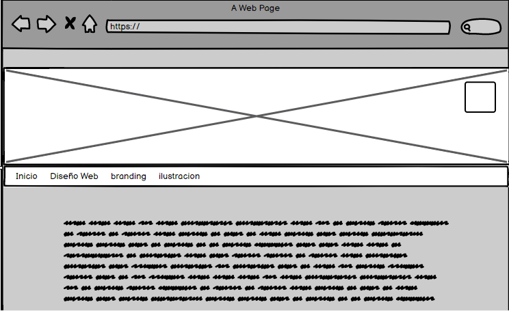

El Mockup
Los Mock Ups son fotomontajes que
permiten a los diseñadores gráficos y web mostrar al cliente cómo quedaran sus
diseños.
Tanto si es un logotipo, como una tarjeta de visita, un folleto o una página web, existen mock
up’s
para todos
los gustos y colores.
Además, permiten ahorrar en gastos de impresión y de montajes ya que, gracias a estas maquetas,
podemos enseñar
papel, páginas web,
papelería, rótulos, vinilos, carteles con resultados muy realistas y bastante aproximados a la
realidad referente con enseñansa web. extraido de https://digibuc.com 10/03/2021
